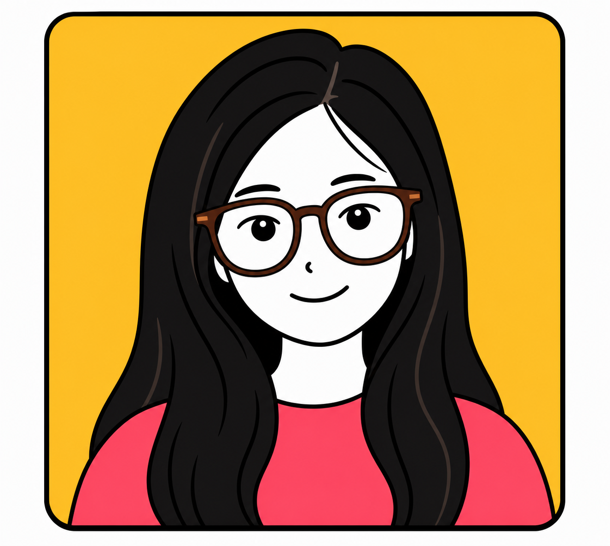

最近在学
接口自动化与 APP 专项测试

ABOUT CHILALA
我是江佩娜，也可以叫我 CHILALA，专注软件测试，喜欢把复杂需求拆解成清晰、可验证、可交付的测试方案。
熟悉功能测试、接口测试、回归测试、性能测试和自动化测试流程。
参与 WMS、MES、跨境电商等系统测试，擅长定位问题并推动修复闭环。
我正在朝着自己喜欢的方向前进！不知道 3 年、5 年、10 年后的我会成为什么样的人，又会做出什么样的作品呢？
接口自动化与 APP 专项测试
把项目经验整理成作品集
AI 编程与测试效率提升
【主线】2025.06
深耕 WMS 仓储供应链系统测试【支线】2026.05
搭建个人网站，把简历和项目经历可视化【主线】2022.06
参与 WMS、MES 企业系统测试【支线】2023 - 2025
学习 JMeter、Postman 与自动化测试【主线】2020.09
成为软件测试工程师，独立承担项目交付【主线】2019.07
从软件测试助理开始进入测试行业快速画出来，认真讲清楚，最后留一点让人会心一笑的小细节。
好的个人网站不只是简历，它更像一个可被打开的工作台：有工具、有痕迹，也有正在形成的新想法。
CHILALA